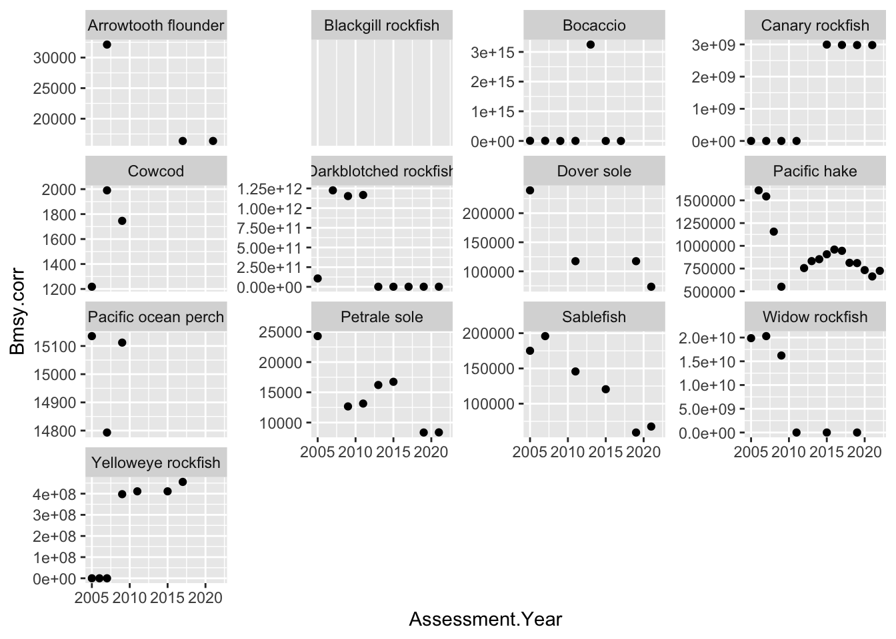
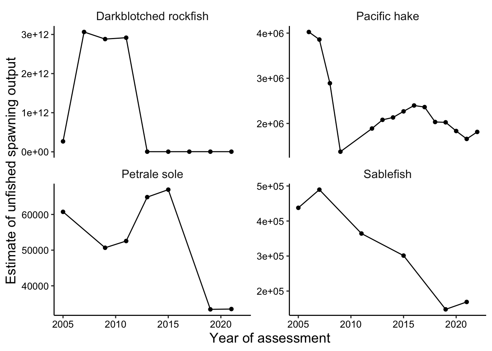

The NMFS Species Information System is the database where NMFS stock assessment data and metatdata are archived at the national scale. Publicly accessible data is available at: https://apps-st.fisheries.noaa.gov/stocksmart?app=download-data
I pulled down all the years (2005-2022) for the PFMC “Juristdiction”, which is the data in “Assessment_Summary_Data_PFMC.xlsx”. The .csv version is just a flattened version of the first page of the Excel Workbook.
Explore the data
I filtered the data to just the Groundfish FMP, and did some data wrangling to get the units of biomass to be comparable across the time series, where possible, and filtered to stocks that have at least 4 asssessments over the 17 year period.
There are 13 stocks that have that level of monitoring.
There are a couple of things we could plot to look at productivity/carrying capacity. Here I am choosing Bmsy because unless there is a change in policy about the reference point (e.g., from b40 to b25 for flatfish), it should have a consistent interpretation across the time series (like Bzero).
When I plot all the species, there are some inconsistencies that are coming from changes in the units of biomass for some of the rockfish species, e.g., changing from spawning biomass to eggs to larvae as the measure of spawning output. This might be able to be standardized with a bit more digging into the assessments, or at least the Bzero might be able to be backed out…
Warning: Removed 8 rows containing missing values or values outside the scale range
(`geom_point()`).

If we just focus on hake, petrale, and sablefish, the plot is a bit cleaner because the units don’t change across the time series. At the end of Kristin and Jameal’s convo, we decided to move forward with these three for now. Kristin should look into the older values to groundtruth them and/or talk to assessment authors to understand how the assessment model structure may have changed, which could influence our interpretation. For example, we know the hake model has been pretty consistent since 2011, so we might focus just on those more recent years.

Here we want to create the HCR plot for Hake, where the x axis will be biomass (not relative to unfished), and the target fishing mortality rate in uncorrected terms.
Need to look up if there are ways to convert eggs to mt biomass - spawning put so we can compare better across species. most of the time series change between one to the other part way through so makes it difficult to know. ask kelli or aaron or kiva.